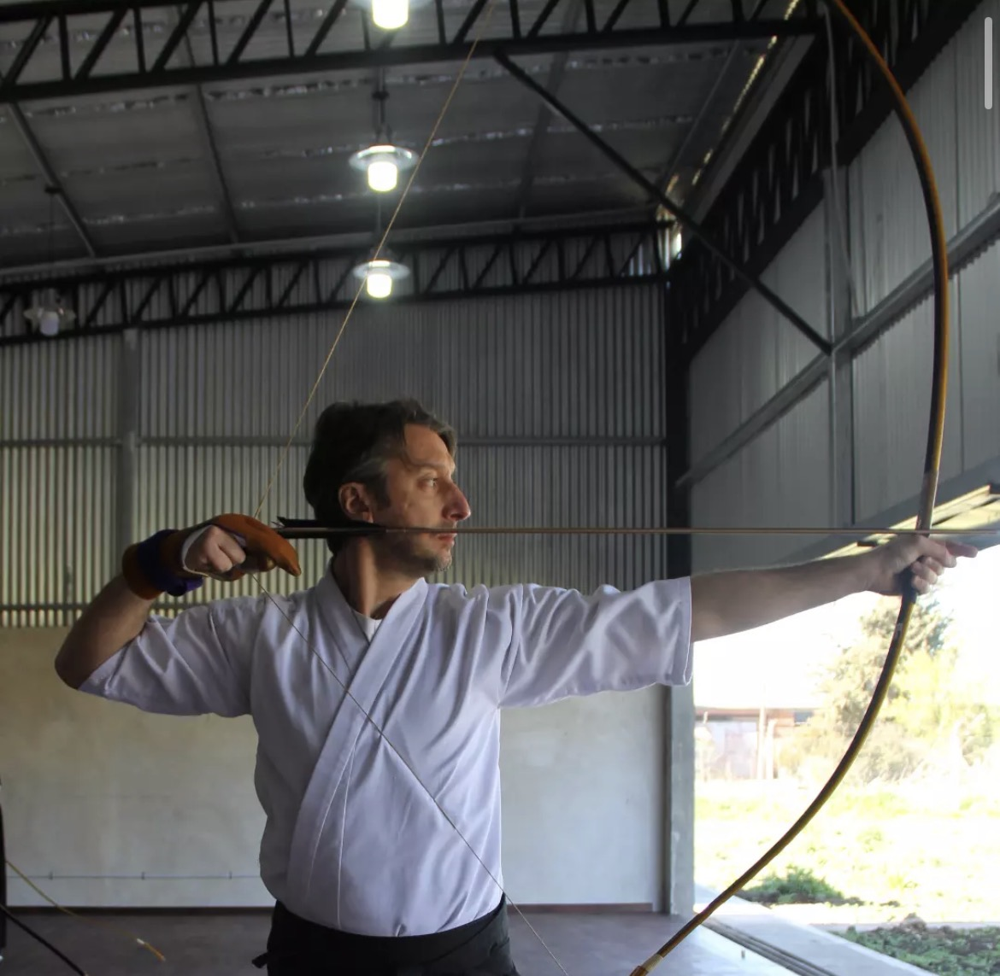
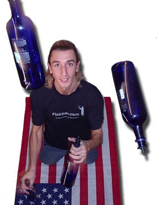

Adriano Marcellino - Brukbar


Adriano Marcellino es un bartender reconocido mundialmente y uno de los dueños de Brukbar. No es un bartender común, porque no solo hace tragos, tambien hace flair.
El flair es como mezclar coctelería con habilidades de malabarismo. Adriano se destacó porque tiene mucha práctica, coordinación y seguridad, lo que le permite hacer movimientos difíciles sin equivocarse.
Además de su talento, ayudó a que Brukbar sea un lugar muy conocido en Buenos Aires, organizando eventos y mostrando este estilo de bartender que llama mucho la atención.
También participó en torneos y competencias, donde los bartenders compiten mostrando sus habilidades. En estos torneos se evalúa la dificultad de los trucos, la creatividad y cómo presentan los tragos.
Gracias a todo esto, Adriano se convirtió en un referente del flair, porque combina técnica, práctica y espectáculo, haciendo que la gente no solo vaya a tomar algo, sino también a ver un show.
|